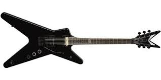

Historia muzyki
Muzyka rozwija³a siê przez wieki. Zmienia³a siê poprzez te lata.
Kompozytorzy dostarczali nowych styli i form muzycznych, powstawa³y nowe instrumenty,
rozwinê³o siê wiele zasad muzycznych. Historia muzyki zosta³a podzielona na epoki: staro¿ytnoœæ, œredniowiecze,
renesans, barok, klasycyzm, romantyzm,zmuzyka wspó³czesna.
Instrumenty

Chordofony – instrumenty, w których wibratorem jest napiêta struna,
Aerofony – instrumenty, w których wibratorem jest drgaj¹ce powietrze,
Membranofony – instrumenty, w których wibratorem jest napiêta membrana,
Idiofony – instrumenty, w których wibratorem jest cia³o sta³e maj¹ce w³asn¹ sprê¿ystoœæ,
Elektrofony – instrumenty, w których wibratorem jest membrana g³oœnika, a Ÿród³em drgañ pobudzaj¹cych wibrator uk³ad elektryczny.